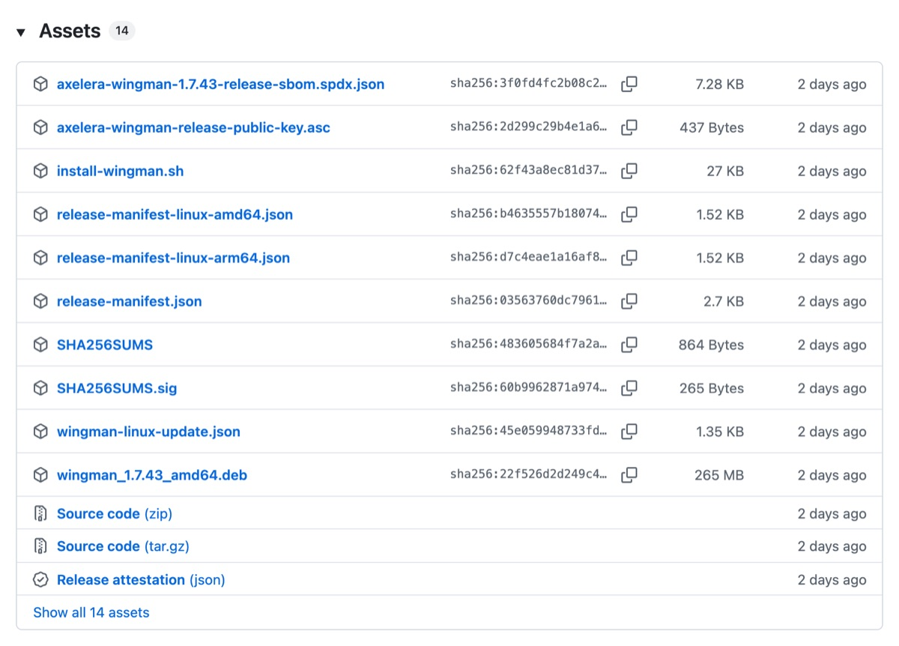
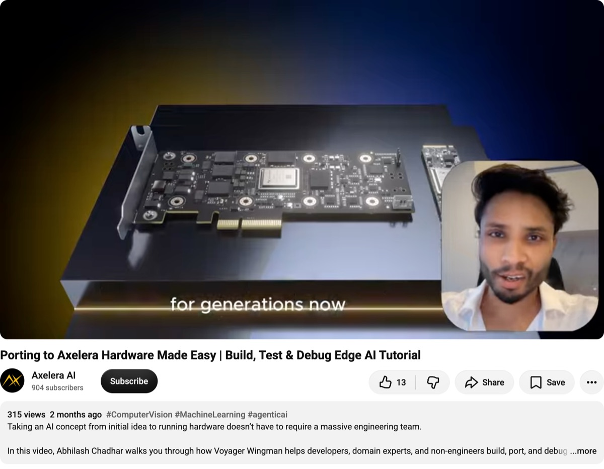
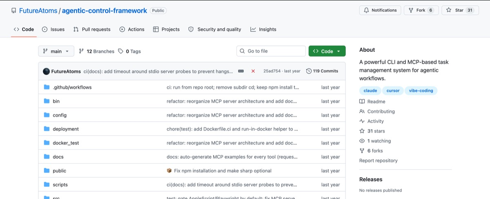
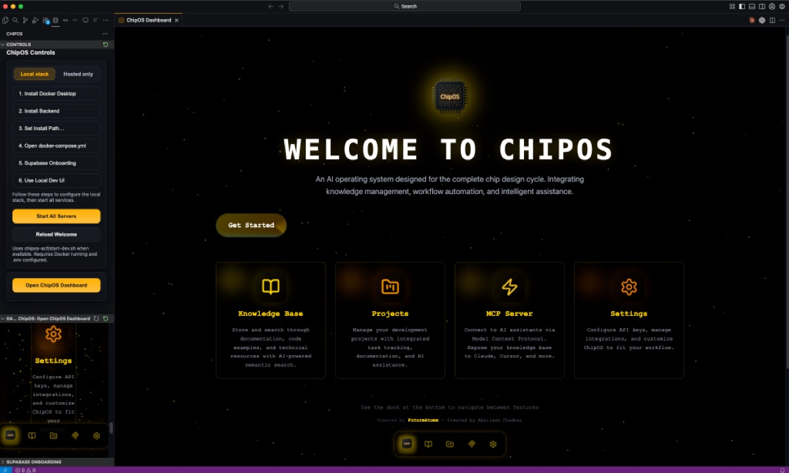
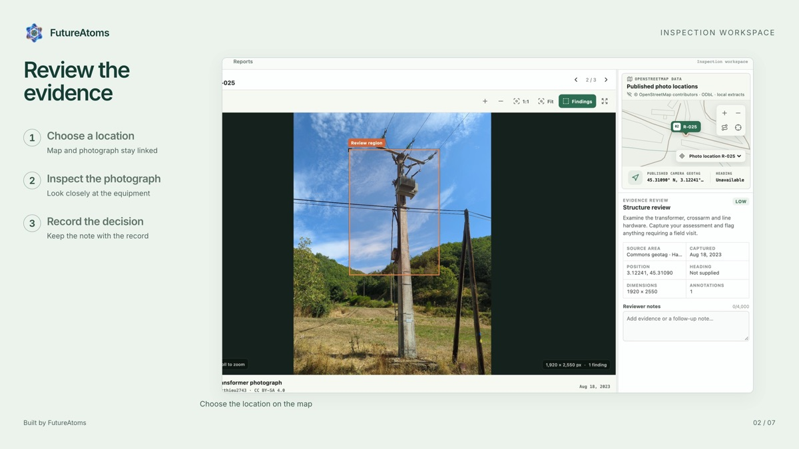
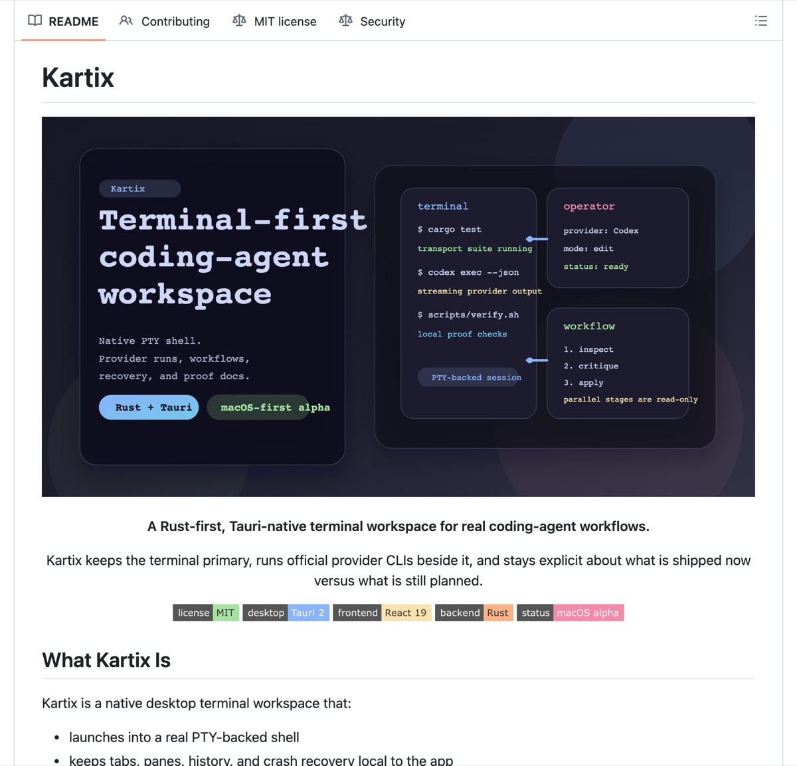

Abhilash Chadhar
Senior Engineer, Axelera Wingman at Axelera AI · Founder, FutureAtoms · Eindhoven, Netherlands
About
Abhilash Chadhar builds Axelera Wingman at Axelera AI and founded FutureAtoms, after 7 years building chips at Intel. He is Senior Engineer, Axelera Wingman at Axelera AI in Eindhoven, the Netherlands, and he builds AI systems end to end, from the silicon to a shipped product.
Axelera Wingman at Axelera AI
Axelera Wingman is the AI assistant for building vision and LLM applications on Axelera's Metis hardware. It ships as Axelera Chat, a hosted web platform, and as a VS Code based desktop app for Linux whose Build agent runs coding engines in the developer's own workspace, with approval gates on terminal and browser actions. Abhilash Chadhar built it from the first commit on 31 March 2026 and is the author of every human commit on its main branch, 2,494 by 28 September 2026: the agents, a server-side multi-model router whose routing policy is informed by model evaluations, the daily knowledge sync with the Voyager SDK and Axelera's documentation, usage metering and credits, customer single sign-on, row-level tenant isolation and the GDPR control plane, with more than 700,000 lines of original code and more than 2,600 automated tests. Axelera AI released it publicly on 15 July 2026, then as Voyager Wingman, with a press release covered by SiliconANGLE, HPCwire and StorageReview; it was renamed Axelera Wingman on 21 September 2026. It shipped 46 public releases by 28 September 2026 and passed Axelera's third-quarter adoption target eight weeks early.
The work around the product
He designed Wingman's credits pricing model and its public pricing page, live since 13 September 2026, and wrote the pricing strategy and launch-quarter business plan. With Axelera's marketing team, which owns the site and owned content, review and go-live, he designed and built the new axelera.ai homepage and moved it onto HubSpot CMS. He produced Wingman's launch and explainer films and its sales materials, presented the Wingman tutorial that Axelera AI published on YouTube on 23 July 2026, built the sales enablement decks for Axelera's reps, and has operated Axelera's bi-weekly sales forecast cycle for its business owner since July 2026.
Chip design and verification at Intel and Axelera AI
At Intel from 2015 to 2022, including a graduate internship, he worked on mixed-signal design and verification of high-speed SerDes PHYs for USB, PCIe and DMI, wrote a SystemVerilog Assertion suite of more than 2,000 rules, and contributed verification work across ten projects that reached working silicon. He was on the founding team of Spring Hill (Intel Nervana NNP-I), which Intel launched in 2019 as its first AI chip: the work began as a side project of three engineers in Intel's Bangalore lab, and he validated its matrix multiplication engine before and after silicon. In Intel's Habana Labs AI accelerator organisation he worked on deep learning hardware architecture and design, including compression encoders, and on the tape-out of Gaudi2, Intel's second-generation Habana AI accelerator, and Intel recognised him in February 2021 for leadership in multichip interconnect technology on TSMC 5 nm and for driving full SoC execution, from architecture and RTL design from scratch to tape-out in under seven months. He also worked on the architecture, design and verification of a compression and decompression engine. He joined Axelera AI in Eindhoven in December 2022. His RISC-V verification work reached its Gold review in September 2025, at 96.0 percent functional coverage.
FutureAtoms and other founder work
FutureAtoms, founded in February 2025 and registered in the Netherlands as a sole proprietorship in December 2025, is his bootstrapped studio, where he runs product, engineering and the business side himself. Its products include ChipOS by FutureAtoms, an agentic development environment for semiconductor teams, announced during the India AI Impact Summit in New Delhi in February 2026, with a press release syndicated through ANI; the Agentic Control Framework, a CLI and MCP server published on GitHub that gives AI coding agents task dependencies, filesystem and terminal tools, browser automation and persistent memory, which he presented at DVClub Eindhoven on 23 September 2025; and Kartix, a Rust and Tauri terminal workspace for coding agents. Before FutureAtoms he launched SystemVerilog GPT, a custom GPT for SystemVerilog and UVM on the ChatGPT GPT Store.
Education and early work
He grew up in Jabalpur, India. He holds a B.E. in Electronics and Communication from Rajiv Gandhi Technical University (2013), a Post Graduate Diploma in VLSI and Embedded Hardware Design from NIELIT Calicut (2014), and an M.Tech in VLSI and Microsystems from the Indian Institute of Space Science and Technology (IIST), India's space university (2016). At IIST he taught 40 hours of Verilog and FPGA lectures as a teaching assistant, and in 2015 he interned at ISRO's Semiconductor Laboratory.
Recognition and talks
Intel recognised his work every year from 2017 to 2021: a Division Recognition Award in 2017, department awards for PCIe Gen4 and USB3.2 PHY work in 2017, 2018 and 2019, and recognitions in 2021 for multichip interconnect leadership on TSMC 5 nm and for the Gaudi2 tape-out. He spoke at DVClub Eindhoven in September 2025 at an event with 360 registrations. His SystemVerilog GPT launch post drew 658 reactions on LinkedIn, and the recruitment firm EU Recruit interviewed him in March 2023 about moving from India to the Netherlands.
Profiles
LinkedIn: linkedin.com/in/abhilashchadhar. GitHub: github.com/FutureAtoms and github.com/AC-e-AI. YouTube: youtube.com/@abhilashchadhar. Axelera Wingman: chat.wingman.axelera.ai/docs. Facts on this page were last checked on 27 September 2026.
Career
- 2026 to nowSenior Engineer, Axelera Wingman, Axelera AI
- 2025 to nowFounder, FutureAtoms
- 2022 to 2025Senior Engineer - Silicon DV, Axelera AI
- 2020 to 2022Senior Deep Learning Hardware Engineer (Habana labs), Intel
- 2019 to 2020Senior Design Verification Engineer (AI accelerators), Intel
- 2018 to 2019Analog Mixed Signal Design Verification Engineer, Intel
- 2016 to 2018Design Verification Engineer, Intel
- 2015 to 2016Graduate Intern, Intel
- 2015 to 2015Intern, ISRO Semiconductor Laboratory
- 2014 to 2015Teaching Assistant, IIST
Selected work
- Axelera Wingman. The AI assistant for building vision and LLM applications on Axelera's Metis hardware, shipped as a hosted web platform (Axelera Chat) and a VS Code based Linux desktop app whose Build agent runs coding engines in the developer's own workspace, with approval gates on terminal and browser actions. github.com/axelera-ai-hub/wingman
- Wingman credits pricing model and public pricing page. Designed the credits pricing model and shipped the public pricing page, live since 13 September 2026: five plans from a free Launchpad tier to Enterprise, three model tiers and 5,000 free credits at sign-up. chat.wingman.axelera.ai/pricing
- axelera.ai homepage redesign and HubSpot CMS migration. A scroll-driven gold-and-black glass homepage with a WebGL stage: 72 scrubbed frames of the Metis package, a 115k-particle teardown and illustrative application scenes built from generated clips, labelled with detection, pose and segmentation model names. axelera-odyssey.web.app/
- Wingman tutorial on the Axelera AI YouTube channel. The Wingman tutorial Axelera AI published on its YouTube channel on 23 July 2026, which I presented. www.youtube.com/watch?v=_WS9bwgj9D8
- RISC-V vector CPU verification. Took a RISC-V vector CPU to its Gold verification review in September 2025 at 96.0 percent functional coverage.
- Sales forecast and executive reporting automation. Ran the handover of Axelera's business data platform (Snowflake, dbt, Fivetran and Hex, fed by Salesforce and NetSuite) and operate the bi-weekly sales forecast cycle for its business owner, with the workbook generated straight from the warehouse since 4 August 2026 behind a fail-closed pre-send gate.
- Detection model compiled for Metis through AxScript. Compiled a detection model for the Metis accelerator through AxScript on Voyager SDK 1.8, as a reference for Wingman agents.
- ChipOS by FutureAtoms. An agentic development environment for semiconductor design: engineers describe intent in plain English and agents generate RTL and verification scaffolding, run tests and triage failures over a searchable knowledge base, shipped as a desktop IDE and web app.
- Agentic Control Framework. A CLI and MCP server, published on GitHub, giving AI coding agents task dependencies, filesystem and terminal tools, browser automation and persistent memory. github.com/FutureAtoms/agentic-control-framework
- SystemVerilog GPT. A custom GPT for SystemVerilog, UVM RTL design and verification aligned with IEEE Std 1800-2017, live on the ChatGPT GPT Store as a free community resource. chatgpt.com/g/g-kq6s41Vkf-systemverilog-gpt
- Kartix. A native macOS terminal workspace in Rust and Tauri that runs official coding-agent CLIs (Claude Code, Codex, Gemini) beside the terminal, released as a public alpha. github.com/FutureAtoms/Kartix
- FutureAtoms Inspection. A prototype desktop and browser workspace for reviewing utility-asset inspection photographs: review queue, map, annotated full-resolution viewer, work orders, and an in-app agent that operates the UI through 26 schema-validated tools against a local model.
- AdaptiVision and DynamicCompactDetect. Computer-vision research code published on GitHub: AdaptiVision adapts object-detection confidence thresholds to each scene, and DynamicCompactDetect builds a compact detector with adaptive routing and early exit for CUDA and Apple Metal. github.com/FutureAtoms/AdaptiVision
- KankerWijzer (BrabantHack 2026). Built with a teammate at BrabantHack 2026 in April 2026, in a four-hour slot: a hackathon prototype for navigating trusted Dutch cancer-information sources, intended for information lookup, with source provenance and abstention when the evidence is missing. www.linkedin.com/feed/update/urn:li:activity:7450101004785713152
- StickerOfficer. An AI sticker maker for WhatsApp and Telegram: text-to-sticker generation, on-device background removal, a canvas editor and packs. github.com/FutureAtoms/StickerOfficer
In pictures





